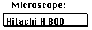
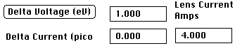
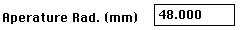
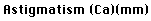
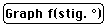

Use  to select the Spherical
and Chromatic aberration coefficients for specific microsopes.
 These prameters are utilized in understanding the
effect of the Lens Chromatic aberration on CTF. These values are used to
develop the Envelope Function to model the attenuation of the Lens as a
radial function. Clicking on Delta Voltage will allow the user to input
a single value (The Chromatic Spread) to model the attenuatioin. Delta
Voltage refers to the average fluctuations in the Accelerating Voltage and
is normalized to the current Accelerating Voltage. Delta Current referest
to the average fluctuations in the Lens Current given in picoAmps.
The  gives the cutoff radius of the hat function
x = 1 for x <= Radius, x = 0 for x > Radius. The radius is given
in millimeters refered to the projected size at the given camera length.
Its distance in reciprocal angstroms is given by Radius/ Camera Constant.
The  is determined as half the difference in defocus
between the major and minor axis of the distorted image and is given in
millimeters based on the conversion to the current camera length.
The Stigmatic Angle refers to the angle from symmetric through which the
CTF is calculated. To see the effect of the coefficient of astigmatism
(Ca) on the CTF calculated it at various angles. The  button will
cause the CTF to be continually calculated at increasing angles. Clicking
on the button a second time will cause the calculations
to stop.
Clicking on the Defocus button will cause the CTF to be calculated at decreasing
defocus. Divergence is a measure of the inability of the microscope to
insure all beams are parallel to the optical axis. Again, it is measured
in mm based on a conversion of angle to millimeters by virtue of the camera
length.